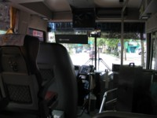
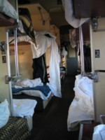

| Возвращение домой (28-29 августа 2003 года) |
|
|
| Возвращение домой |
|
Часть I - БИЛЕТЫ
Самолёты из Сеула в Омск не летают, это факт. Зато летают в Новосибирск, от которого до Омска, как известно, совсем недалеко. И летает туда только "Сибирь", у которой, впрочем, самые низкие цены. Вот только билетов нам не досталось. :-О Думаю, это было связано с приближающимся новым учебным годом - все, имеющие такую возможность, повезли детей учиться, так что билеты распроданы аж почти до конца сентября. :-( Что делать? Мы стали изыскивать другие варианты и обзванивать различные авиакомпании. Результаты были малоутешительными - у кого-то по ценам, у кого-то, как у "КрасАйра", - потому что они "извините, в этом году не летают из Сеула", у кого-то - по датам: нам же нужно состыковать два рейса - из Сеула куда-то и откуда-то в Новосибирск или Омск. :-/ Да, цены были ужасны. :-( Я и так понимала, что мы не уложимся в миллион за два билета, но не настолько же! :-О "Сибирь" предлагала один билет за 400$ + сборы, остальные же оценивали доставку одного субъекта в 600+. Обидно. :-/ И вот наконец мы наткнулись на "Дальавиа" (ранее известную как "Хабаровские авиалинии"). После звонка выяснилось, что летают они в Хабаровск ежедневно, и даже могут предложить вариант с удачной стыковкой двух своих рейсов, чтобы мы улетели в Новосибирск или Омск практически без ожидания в Хабаровске. :-) Просто чудесно! Тем более что цены у них оказались даже ниже, чем у Сибири! :-О Но только если лететь до Новосибирска. :-( До Омска же... просто тихий ужас: цены билета на маршруте Хабаровск-Новосибирск и Хабаровск-Омск различаются... в три раза!!! 8-О Простите, но нету у нас лишних полтыщи баксов за двоих, нету! Тем более что пресловутая "Сибирь" летает из Новосибирска в Омск всего за... 400 рублей. 8-) (Но только раз в неделю и как раз в пятницу, когда мы будем в Новосибирске!) Пришлось брать билеты до Н-ска. Итак, мы добираемся домой с двумя пересадками - в Хабаровске и Новосибирске, обе ночью, у нас с собой уйма груза, Глеб с трудом ходит после неудачного падения в горах... Из хорошего: билеты нам достались баксов на сто дешевле, чем я надеялась, а груза мы можем провезти аж по 30 кг! Но только до Хабаровска, оттуда уже по 20. :-/ Зато ручную кладь не взвешивают, как некоторые жадные авиакомпании - а нам это весьма актуально: в руках же два ноутбука, которые вместе весят килограммов десять. :-( Всё, собираемся домой. :-) Часть II - СБОРЫ
Особенно отравляло мне жизнь наше зимнее: в Корею-то мы везли это на себе, а из Кореи приходится... тоже на себе, но не так удобно. ;-) Да, свой любимый столик мы взяли с собой. :-) Часть III - ДОРОГА № 1: "ДОМ - АЭРОПОРТ" Вызванное такси должно было доставить нас вовсе не в аэропорт (мы не столь богаты), а только до остановки автобуса, следующего до аэропорта. Ну это оно только должно было. На самом деле таксист оказался не очень компетентный, так что добрались мы не до той остановки, которая ведёт в аэропорт, а до той, которая ведёт из аэропорта. :-( Пока мы насторожились, пока задумались и разобрались... Тут ещё подошёл доброжелательный пожилой кореец, который нам намекнул на то же самое. Он слегка говорил по-английски, так что мы попросили его остановить такси и объяснить водителю, чего мы хотим. Кореец так и поступил и даже помог нам загрузить багаж в машину! Казалось бы, что проще: перевезти нас на противоположную сторону улицы и высадить у другой остановки "с самолётиком", которая нам встретится. Но водитель вообще не знал, куда ехать! :-О Мы были в ужасе: изъясниться с ним довольно трудно, так как английского он не знает, да и мы не знаем, куда он нас уже завёз, пока мы насторожились. :-( И время уже поджимает - до аэропорта далеко, а мы до остановки всё никак не доберёмся. В конце концов мы всё-таки оказались каким-то чудом на старой знакомой улице недалеко от дома, и тут-то я заметила подходящую остановку! Так что водитель нас на ней высадил, но плату по счётчику брать не стал, только какую-то часть... хотя такому вообще не стоило бы платить. Как он собирается работать, ничего не зная?! :-/  На остановке нам не пришлось долго стоять - минут через пять уже подошёл автобус. Водитель (в белых перчатках) вышел, чтобы помочь загрузить вещи в багажное отделение автобуса. Так что в салон мы взяли с собой только сумки с ноутбуками. :-) Но и там для вещей выделено отдельное огороженное место, так что тебе ничто уже не мешает - красота. :-) Поскольку автобус был ещё пустой (мы садились недалеко от конечной остановки), то мы могли выбрать любые места, и выбрали те, из которых открывался хороший вид из переднего окна, т.е. сразу за багажным загончиком в автобусе. Это была самая удобная и приятная часть нашего маршрута. Высокие мягкие
кресла, хорошие кондиционеры, приятный вид из окна, никаких переживаний по
поводу багажа... сплошное удовольствие. :-) Но эта часть была и самой
короткой, к сожалению. :-( Эх, вот так бы - и до Омска... ;-)
Часть IV - АЭРОПОРТ "ИНЧОН" В аэропорту сразу у автобуса откуда-то возникла тележка для багажа, куда мы сложили наши столик, чемодан, упаковку с зимними куртками (размером с ещё один чемодан), два ноутбука и три другие сумки... Удобно. :-) Тем более что на тележке можно ехать, если встать на одну из имеющихся сзади удобных подножек и отталкиваться другой ногой. ;-) Благо, размеры аэропорта не просто позволяют так кататься, но и вынуждают это делать, если ты торопишься, а мы торопились. К тому же Глеб сильно хромал, а идти для упаковки багажа ой как далеко... Посудите сами: в аэропорту всего 12 блоков для регистрации, помеченных латинскими буквами от "А" до "М", каждый состоит из 40 отдельных "окошек", расстояние между этими блоками как минимум метров 50... нет, больше, но я точно не померяла. Мы регистрируемся около стойки "J" (№9), а упаковка багажа расположена около стойки "В" (№2), так что нам нужно быстренько проделать путь в чуть не полкилометра (в центре, между "F" и "G" вообще огромное пространство, с соснами и бассейнами) в одну сторону, а потом столько же в обратную. :-( Вобщем, Глеб очень радостно катался по аэропорту. :-)
Всё, времени мало (до вылета полчаса), и мы быстро отправились в обратный путь. По дороге доделали прочие мелкие дела типа обмена лишних вон на нелишние доллары. :-) И вот он, первый момент сдачи багажа... Сколько у нас всего получилось-то хоть?.. Ага, 63кг на двоих. Не считая сумочек, фотоаппарата, двух ноутбуков и прочей мелочи общим весом килограммов на 15, которая является ручной кладью. ;-) Девушка и бровью не повела... Ну подумаешь - три лишних килограмма... Доплачивать ничего не заставили. Ура! :-) Меня же больше волновал столик: его габариты примерно 80х60х10... так что смотря как рассуждать, а то можно его и за "негабаритный груз" засчитать. :-( Но кореяночка его изо всех сил старалась утолкать среди обычного багажа. Столик же был совершенно другого мнения о своём путешествии, так что растопыривался изо всех сил и в дверку не проходил. :-( После трёх остановок траспортёрной ленты кореяночка сдалась и, вернув нам упрямую скотинку, отправила в отделение негабаритного багажа. :-( По пути я прикидывала, во что нам обойдётся столиное упрямство... :-( В том самом отделении "главный" кореец разговаривал по телефону, а нам просто махнул рукой, куда положить коробку... Мы положили и стали ждать, что же с нас за это теперь... Но парень махнул рукой, типа "можете идти". 8-О Т.е. весь смысл этого отделения - более крупный транспортёр с более широкой дверкой. И ВСЁ! 8-) А доплачивать ничего не нужно. :-) Так... теперь - личный и вещевой досмотр и паспортный контроль. Причём передварительно нужно разуться, обувь проезжает через сканер наравне с прочими вещами. :-О Временно выдаются резиновые тапочки. :-) Я прошла быстро, так как ничего нелегально на себе не везла. ;-) Да, проверка не так, как у нас, через "воротца", а ручным компактным металлоискателем. Женщин проверяют женщины, мужчин - мужчины. У меня на кофточке был вертикальный ряд из заклёпок, и проверяющая получила соответствующую трель. :-) А вот у Глеба в кармане нашли "ногтерезку", которые вообще-то изымаются (в аэропорту множество выставок изъятого добра), но эта была особо карликовой формы, так что проверяющий похихикал, вертя её в руках, и вернул. :-) Зато у меня спросили, мой ли пакет прошёл только что через сканер и пошарились там чем-то, очень напоминающим пылесос. :-О В это время я любовалась на содержимое чужих сумок, выдаваемое на монитор - весьма любопытное занятие! Особенно меня порадовало обилие в сумках... презервативов. :-) Да, люди озабочены сексом. Но самое удивительное, чего я до сих пор не могу понять - это явно виденный мной презерватив, "провозимый в развёрнутом виде". :-О Есть идеи? :-) Паспортный контроль... Долгое ожидание в очереди (до вылета 15 минут), а в результате у Глеба анкета не заполнена, которую ему выдали ещё в декабре прошлого года... вот, не нашёл свободной минутки для заполнения. :-Е :-) Всё прошли, и бегом к нашему 41-му гейту... Народу уже совершенно нет, только нам машет кореяночка: дескать, поторапливайтесь, десять минут осталось до взлёта! Ох, это всё таксист неграмотный, долго нас катал... Но тут вам не Россия, тут можно и за пять минут до взлёта сесть в самолёт... мы почти так и сделали. :-) Кажется, мы были уже последними. Да, наш самолёт - это уже Россия. И мухи русские, и кондиционеры... С жалостью вспомнили удобный и просторный автобус. И стюардессы не кланяются и даже не улыбаются... кончилась Корея, добро пожаловать домой. (Смайлики расставьте по вкусу.) Часть V - ДОРОГА № 2: "СЕУЛ - ХАБАРОВСК" До Хабаровска лететь два с половиной часа, вылетели с опозданием в 20 минут. В полёте покормили, чему мы были рады, хотя и поели перед тем, как ехать в аэропорт. Вобщем, долетели довольно быстро и без приключений. Вот только самолёт какой-то непрезентабельный - потёртый, старый, дребезжащий... да, кстати, по поводу дребезжания. Как его трясло! :-О Как будто он по облакам ехал, а не летел над ними. :-/ Временами казалось, что едешь на разболтанном автомобиле по просёлочной дороге. Стюардессы в такие минуты хватались за бутылки с развозимым вином, а Глеб поднимал стакан с минералкой повыше. :-) Опять же про напитки. Поили вином, пивом и кока-колой. :-( Хорошо, что мы взяли с собой бутылку корейской минералки (негазированной), иначе мне нечего было бы пить. Часть VI - ХАБАРОВСК Самолёт по дороге не рассыпался и преземлился в Хабаровске с опозданием всего в полчаса. Паспортный контроль прошли быстро. Багаж получали тоже быстро, только с коробкой задержка вышла. Теперь таможня, самое страшное... казалось, а на деле разговор с таможеницей был примерно таким: "Сколько у вас багажа?" - "Около 60 киллограммов, нам общий вес не сказали (только по-отдельности называли)" - "Ну, рассказывайте, что у вас там" - "Эээээ... зимние вещи, столик..." - "Идите". :-) Итак, мы в Хабаровске и вполне приняты родиной. Нужно теперь ещё найти терминал внутренних линий, мы-то находимся на международном. Благо нам охотно показывают "воооон то" здание метрах в ста от нашего. Ну ещё его нужно обойти, так как вход с противоположной стороны... так что метров 200 может быть и наберётся. Попытки найти тележку или грузчиков не увенчались успехом. :-( Зато нам прдлагали доехать туда на машине. Цены стабильные - 200р. 8-О Рубль метр! Как вам цены? :-( Не столько было жалко денег, сколько злость разбирала. Так что мы пошли пешком. Глеба я отправила вперёд - время поджимает, до вылета меньше часа и это не Корея, тут регистрация заканчивается за 40 минут. Вобщем, Глеб должен был как-то отметиться, чтобы нас подождали. Всё-таки стыковка двух рейсов "Дальавиа", так что это их внутренние проблемы. Кстати, у них даже на билетах в правилах указано, что они компенсируют все нестыковки и отвечают за то, чтобы пассажир мог добраться туда, куда собирался. Вобщем, за это я не волновалась, но хотелось бы вылететь побыстрее. Глеба я, конечно, отправила с самым лёгким и удобным грузом, мне же досталось всё остальное, с чем я медленно ползла в нужную сторону... Хорошо, что потом попался какой-то мужик, который предложил помочь. :-) А недалеко от аэропорта меня уже и Глеб подобрал. И тут "сюрприз" - наш самолёт опаздывает. Не в том смысле, что он сидит и не вылетает, а просто он ещё не прилетел. :-О Или, по другой версии, он был здесь, а то ли народу маловато, то ли кто-то неудачно состыковался, но полетел наш самолёт в Южно-Сахалинск за пассажирами. Вот слетает, вернётся, и тогда уже полетит в Новосибирск. :-О Чудесато. :-) Сидим в маленьком, тёмном, холодном (на улице +12, а мы улетали из +30) и пустом аэропорту Хабаровска и ждём, когда же прилетит наш самолёт. Обещают - в час ночи по местному времени, а должны мы были вылететь в 22:00. :-( Иду в киоск за кипятком для Глеба (пакетики с чаем у нас есть). Кто бы рассказал, я бы не поверила. Итак, история... Отступление. История про чай. Ночь. Хабаровск. Аэропорт. Киоск с "едой". Передо мной два мужика покупают
что-то и два стакана чая. Следом я:
Вобщем, какая-то невменяемая тётка. :-О Пришлось другой киоск искать, в котором оказалась более сообразительная продавщица. Конец отступления. Наконец, объявили начало регистрации и мы потянулись сдавать багаж. Я уже мысленно отсчитывала полторы тысячи рублей за перевес в двадцать с лишним кг, не считая ручной клади... И тут произошло чудо. Немолодай контролёрша, ночь, опаздывающий рейс, два наших перелёта отмеченные в одном билете... и она определяет, что наша норма провоза - 30кг! Так что нам предлагается прямо здесь, "чтобы не бегать в кассу" доплатить 100р. :-) Просто фантастическое везение. Часть VII - ДОРОГА № 3: "ХАБАРОВСК - НОВОСИБИРСК" Где-то около часа мы действительно из Хабаровска вылетели. Второй самолёт оказался более удобным, более новым и менее тряским. Хотя гудел при посадке ещё сильнее. Это что, новая мода такая, сажать самолёты почти как вертолёты, без пробега по ВПП? Часть VIII - НОВОСИБИРСК Итак, в два часа ночи мы оказываемся в Новосибирске. Тут перед нами дилемма: сидеть в аэропорту до часу дня и лететь домой самолётом (тут уж с багажом никто не ошибётся, к сожалению) или ехать на вокзал, покупать билеты на поезд и к обеду уже быть дома. Получаем багаж и Глеб бежит звонить на вокзал, чтобы узнать, есть ли билеты на ближайший поезд. К сожалению, мы надеялись, что Глеб обернётся быстрее, так что багаж только получили, но не вынесли через контроль. В результате я осталась там последней, от услуг носильщиков, предложенных грузчиками, отказалась, так что на меня напали кучкой и контролёры, и грузчики всвязи с перевесом. :-( Я, естественно, отбивалась (вообще-то мы уже давно прилетели, так чего же приставать), а они наставивали, что для одного билета у меня слишком много багажа. :-) Потребовали показать билеты, где и разглядели, что норма - 20 кг. :-/ Я сказала, что мне вообще фиолетово, что сумки мои ничего не весят, а Хабаровск никаких претензий к весу не имел. Вобщем, и я, и они знали, что не правы, но у меня было преимущество, так как я знала, что не только я не права, но и они не правы, а вот они веса не знали, так что не могли знать, что я тоже не права. :-) В конце концов они были вынуждены отпустить меня. :-Р Тут прибежал Глеб и сказал, что билеты на поезд есть, а женщина с нашего же рейса, с которой я случайно познакомилась, так как она искала кого-то, кто бы помог ей добраться до вокзала, успела уже поймать такси. Я немного поторговалась с водителем, прикинувшись опять же, что сумки ничего не весят, так что вышло по 100р с человека (т.е. как мы и планировали - 200р до вокзала). К тому же таксист помог нам донести одну (самую лёгкую) сумку. Зато он был страшно зол, когда разгружал наши вещи у вокзала - вес оказался "несколько преуменьшенным", но о доплате уже и речи быть не могло. ;-) Часть IХ - ВОКЗАЛ На вокзале я подождала с вещами, пока Глеб покупал билеты на ближайший поезд. Да, здание вокзала намного приличнее, чем в Омске. Удивительно даже. Билеты были куплены на поезд Тында-Москва отправляющийся около пяти часов утра и прибывающий в Омск в 13 часов (мы бы ещё из Новосиьирска не вылетели, если бы самолётом решили добираться). Тут я окончательно запуталась в часовых поясах: в Сеуле - сеульское время, в Хабаровске - хабаровское, в Новосибирске в аэропорту - новосибирское или омское, по вкусу, а на вокзале - московское. :-О Так что я позвонила родителям, сказала, что билеты купили и будем в Омске в 10 часов утра по омскому (а на самом деле это было московское). :-) Номер поезда я тоже сказала, но в Н-ске его почему-то объявляли совсем не так... Короче, единственное, что я сказала правильно - это номер вагона. :-) Так что потом всю дорогу переживала, что они просидят полдня на вокзале, встречая нас. Часть Х - ДОРОГА № 4: "НОВОСИБИРСК - ОМСК"  Поезд пришёл с опозданием в полчаса, так что стоянка его была сокращена. :-( Номер пути, на который он прибудет - это военная тайна, которую можно сообщить пассажирам только перед самой погрузкой. Вобщем, мы опять набегались с нашим багажом - билеты-то были в первый вагон. :-( Но ничего, благополучно загрузлись, разместились и даже взяли один комплект постельного, чтобы подремать по-очереди - спать, несмотря на усталось от последних суток в дороге, не хотелось. Чего нам не хватало - так это продуктов. :-) На вокзале я не догадалась запастить хотя бы "одноразовой лапшой", а ночью в поезде еду добыть было негде. С голоду мы, конечно, не умерли, но проголодались сильно. Немножко поспали, а там уже и Омск. Поезд даже пришёл вовремя. Ну, в Омске нас уже встретили родители на машинах, так что забот никаких не было - сиди и отдыхай. :-) |


{kind=link}
{kind=link}
{kind=link}